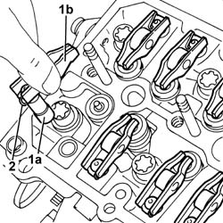

1036H55 hydraulic tappet (one) - replace with cylinder head extension removed
- Path
- Procedures > 10 ENGINE > 1036 TIMING SYSTEM > 1036H tappets and rocker shafts > 1036H55 hydraulic tappet (one) - replace with cylinder head extension removed
- Kind
- repair procedure (removal / refitting; the operation number is the code)
- Applies to
- engines: 2.4 JTD 20v; all production periods
- Interactive page
- https://sloeber94.github.io/elrnDB-a156/en/#/3237876
Applies to: engines: 2.4 JTD 20v; all production periods
 Removing
Removing
 Refitting
Refitting1. Remove the hydraulic tappets assembly (1a) and the relevant rocker arms (1b).
2. Remove the clip and separate the hydraulic tappet from its rocker arm.

Applies to: engines: 2.4 JTD 20v; all production periods
Refitting
RemovingAssemble the hydraulic tappet to its rocker arm and secure them to the spring.
Refit the hydraulic tappets assembly and the relevant rocker arms in their seating.